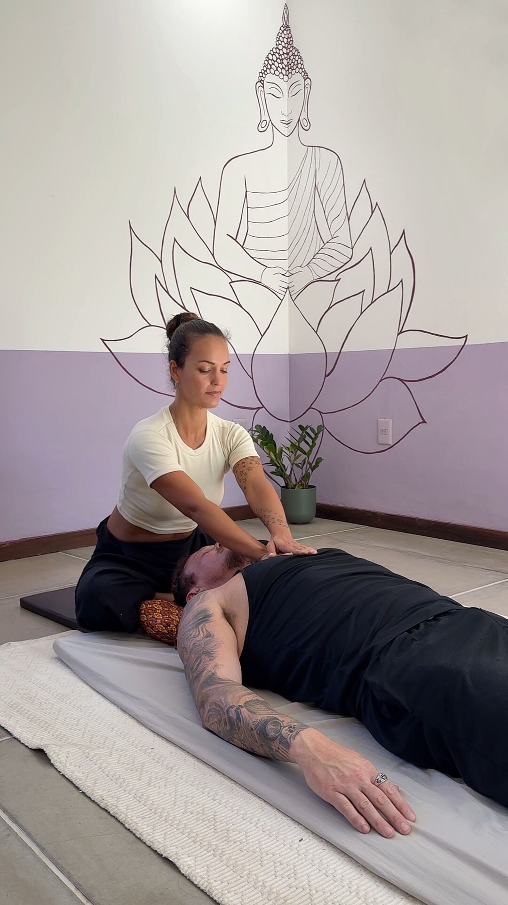

Thai Massage em Florianópolis · CampecheRecuperação.
Equilíbrio.
Vitalidade.
Massagem tailandesa tradicional e Thai Sports Massage em uma abordagem personalizada para recuperação, equilíbrio e vitalidade do corpo.
Agendar sessão
Uma experiência individualizada
Explore o cuidado
Florianópolis · SC

Tradição · Presença · Movimento
01 / Massagem tailandesa tradicional
Thai Massage, uma tradição terapêutica tailandesa.
A Thai Massage — ou massagem tailandesa — é uma prática da Medicina Tradicional Tailandesa que compreende o corpo de forma integrada, considerando a relação entre estruturas, movimento, energia e equilíbrio.
Combina técnicas de pressão, alongamentos assistidos e mobilizações articulares para liberar tensões, promover mobilidade e favorecer o equilíbrio e a vitalidade do corpo.


02 / Massagem para atletas e corpos ativos
Thai Sports Massage.
A técnica tailandesa aplicada às necessidades de quem pratica esportes e mantém uma vida fisicamente ativa.
A Thai Sports Massage considera a modalidade esportiva praticada, a rotina de treinos e as necessidades individuais, direcionando o trabalho para recuperação, liberdade de movimento e potencial físico.
RecuperaçãoMobilidadeFlexibilidadeLiberação de tensõesPreparação para o movimento


03 / Sobre Karina Albuquerque
Uma trajetória construída pelo movimento.
A trajetória de Karina é marcada por sua busca por uma compreensão integrada do ser humano e pelo aprofundamento contínuo de seus conhecimentos.
Antes da Thai Massage, foram mais de 15 anos dedicados à dança, com carreira internacional e contato com diferentes práticas corporais. Em 2011, iniciou sua formação em Thai Massage em Chiang Mai, na Tailândia, formando-se terapeuta e professora pelo ITM — International Training Massage School. Desde então, segue aprofundando seus conhecimentos com professores e mestres tailandeses.
Hoje, reúne mais de uma década de experiência com a prática terapêutica da Thai Massage, unindo a tradição tailandesa a uma abordagem personalizada.
15+anos dedicados à dança
2011início da formação na Tailândia
10+anos de experiência em Thai Massage
04 / Sua experiência
Cada sessão começa pela escuta.
Cada sessão é única e individualizada. O atendimento considera seu momento, suas necessidades e seus objetivos, com uma condução que se adapta às respostas do seu corpo ao longo da sessão.
01
Avaliação
Compreensão do seu momento, necessidades, histórico e objetivos.
02
Necessidades
Identificação do que é prioritário para você naquele momento.
03
Direcionamento
A sessão é conduzida de acordo com o que foi identificado na avaliação, definindo abordagem, intensidade e recursos.
04
Condução dinâmica
A condução é ajustada ao longo da sessão de acordo com suas respostas, necessidades e limites.
05
Pós-sessão
Orientações após a sessão e um follow-up para compreender os efeitos do atendimento e estender seus benefícios ao dia a dia.
05 / Um cuidado para cada momento
Cada momento pede um cuidado diferente.
Um cuidado integral e personalizado para diferentes necessidades — da recuperação e mobilidade ao relaxamento e à vitalidade.

Mobilidade

Alívio de tensões

Performance
Equilíbrio e vitalidade
06 / Relatos de quem já vivenciou
Experiências que falam por si.
Relatos de pessoas que vivenciaram o atendimento. As avaliações abaixo foram selecionadas como referência do perfil da Karina no Google.
Avaliação do Google
“
Relato em destaqueA sessão de Thai Massage com a Karina foi incrível!
A experiência na técnica tailandesa é notável, e a massagem trouxe um alívio imediato para meu corpo, além de uma sensação de equilíbrio e bem-estar espiritual.
Tiago AmorimAvaliação compartilhada como referência do Google“Foi mais do que apenas uma massagem perfeita. É um espaço seguro com uma ótima atmosfera e foco nas necessidades/problemas individuais.”
LukasReferência: Google“Antes da sessão com Karina, eu tinha dores nas costas que vinha carregando há meses. Foi uma experiência muito boa, e saí de lá como uma pessoa nova. Tudo emana uma boa energia, e a Karina é uma excelente profissional.”
Joel BaguéReferência: Google“Sensacional. A Karina é extremamente atenciosa e sensível quanto às necessidades que levamos até ela.”
Cathy CabralReferência: Google“Já estive na Tailândia muitas vezes, fiz centenas de massagens tailandesas e a Karina é maravilhosa! Ela realmente entende do assunto! Recomendo muito!”
Timothy ReynoldsReferência: Google07 / Perguntas frequentes
Dúvidas sobre a Thai Massage.
O essencial para você chegar à primeira sessão tranquilo.
O que é Thai Massage?
A Thai Massage, ou massagem tailandesa, é uma prática da Medicina Tradicional Tailandesa que combina técnicas de pressão, alongamentos assistidos e mobilizações articulares para liberar tensões, promover mobilidade e favorecer o equilíbrio e a vitalidade do corpo.
Qual a diferença entre Thai Massage e Thai Sports Massage?
A Thai Sports Massage aplica a técnica tailandesa às necessidades de quem pratica esportes. Ela considera a modalidade, a rotina de treinos e as necessidades individuais, com foco em recuperação, mobilidade, flexibilidade e preparação para o movimento.
Para quem a Thai Massage é indicada?
Para quem busca recuperação, mais mobilidade, alívio de tensões, melhor performance ou simplesmente equilíbrio e vitalidade — de atletas e pessoas fisicamente ativas a quem deseja um momento de cuidado.
Como funciona uma sessão?
Cada sessão é individualizada: começa com uma avaliação do seu momento e objetivos, segue com uma condução ajustada às respostas do corpo e termina com orientações pós-sessão e um follow-up.
Onde é o atendimento e como agendar?
O atendimento é no Campeche, em Florianópolis (SC), com hora marcada. O agendamento é feito pelo WhatsApp (48) 99695-4356, e o endereço exato é informado na confirmação.
Qual a formação da Karina Albuquerque?
Karina iniciou sua formação em Chiang Mai, na Tailândia, em 2011, formando-se terapeuta e professora pelo ITM — International Training Massage School. Desde então, segue se aprofundando com professores e mestres tailandeses.

Seu momento começa aqui
O seu momento de cuidado é agora.
Reserve um momento para vivenciar uma experiência de cuidado profundo, pensada para você.
Agendar pelo WhatsApp08 / Thai Massage no Campeche, Florianópolis
Vamos encontrar o seu momento.
Atendimento de Thai Massage e Thai Sports Massage com hora marcada no Campeche, em Florianópolis. Consulte a disponibilidade e escolha um horário para sua sessão.
WhatsApp(48) 99695-4356
InstagramKarina Albuquerque — Thai MassageInserir o link correto do perfil antes da publicação.
LocalizaçãoCampeche — Florianópolis, Santa CatarinaAtendimento com hora marcada.
O endereço exato será informado ou confirmado no agendamento.
Karina Albuquerque · Thai Massage
“O bem-estar não é um destino. Está na forma como escolhemos viver.”
Recuperação · Equilíbrio · Vitalidade